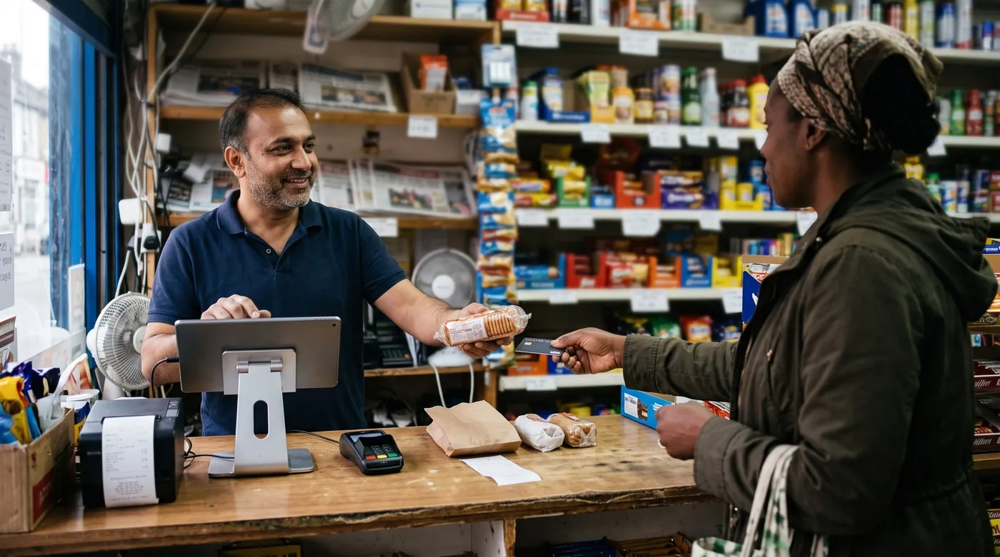

digabloPos vs Square: Which POS Actually Costs Less in 2026?
Square's pricing page is one of the clearest in the industry, which is exactly why it is worth doing the arithmetic on it. Once you multiply the published rates by a real month of trading, two things fall out that the pricing page does not spell out: the paid plans do not pay for themselves until you are much bigger than you probably are, and the flat fee per transaction quietly costs small-ticket shops far more than the headline percentage suggests. Here is that maths, alongside where digabloPos takes a different route, and the three situations where Square is simply the better answer.

Quick tool: run your own numbers with our POS total cost calculator before you read our conclusions.
Two different products, sold the same way
Square and digabloPos both give you a till app, both let you start for nothing, and both look like a POS system in a screenshot. Underneath, they make money in opposite ways.
Square is a payments company that built a POS around its card processing. The software can be free because a percentage of every sale goes back to Square. You cannot bring your own processor: Square is the processor, and that is the whole design.
digabloPos sells the software and stays out of your payments. The base plan is free forever, the publisher takes no commission on your takings, and you connect whichever payment processor you have negotiated with. Advanced features are paid modules, roughly $5 to $20 a month each, so you pay for the ones you actually switch on.
Related reading: the hidden fees a free POS won't tell you, POS contracts and lock-in, and Square vs Toast vs Clover vs Loyverse.
Neither model is dishonest. But one of them charges you more as you grow, and the other does not, and that difference is measurable rather than rhetorical. So let us measure it.
When Square's paid plans start paying for themselves
Square publishes three tiers. The free plan is $0 a month with in-person card payments at 2.6% + 15¢. The Plus plan is $49 a month and drops the in-person rate to 2.5% + 15¢. The Premium plan is $149 a month at 2.4% in person.
Look at what you are actually buying with that $49. The rate falls by 0.1 percentage points. To recover $49 from a saving of 0.1%, you need 0.1% of your monthly card volume to equal $49, which means $49,000 of card sales a month. Below that, the Plus plan costs you more than the free plan does.
The same sum on Premium: the rate falls 0.2 points from the free plan, so $149 ÷ 0.002 gives a break-even around $74,500 a month.
This is not a criticism of Square, and it is not a trick. It is arithmetic that follows directly from Square's own published numbers, and it leads somewhere useful: if you are a normal independent shop turning over less than roughly $49,000 a month on cards, the correct Square plan is the free one, and any salesperson steering you upward is costing you money. Take that with you even if you never look at digabloPos.
Square also tells businesses above $250,000 a year to ask about custom pricing, which is a polite way of saying the published rates stop being the real rates at scale. If you are near that line, negotiate.
The 15c problem nobody puts on the pricing page
The percentage gets all the attention. The flat fee does the damage.
Take a café selling a $3 coffee. The percentage costs 7.8¢. The flat fee costs 15¢, nearly twice as much. Total: 22.8¢ on a $3 sale, an effective rate of 7.6%. Now take a homeware shop selling an $80 lamp: 2.6% is $2.08, the flat 15¢ is a rounding error, and the effective rate is 2.8%.
Same processor, same published price, and one merchant pays nearly three times the rate of the other. The variable is not the percentage, it is your average basket.
So the honest version of "what does Square cost" is: work out your average ticket first. Under $10, the flat fee is your main cost and no plan upgrade fixes it, because the 15¢ is identical on all three tiers. Over $40, Square's percentage is competitive and the flat fee stops mattering. A shop with a $4 average basket and 3,000 transactions a month pays about $762 in fees on $12,000 of sales. That is 6.4%, and it is the single most under-discussed number in small retail.
With a bring-your-own-processor model, this is negotiable: interchange-plus contracts price the fixed component separately, and a high-volume, low-ticket merchant can often get it down. Whether you actually will depends on your negotiation, your sector and your history, so we are not going to publish a number we cannot stand behind. But the lever exists, and with Square it does not.
The eight-country limit
Square operates in eight countries: the United States, Canada, Australia, Japan, the United Kingdom, Ireland, France and Spain.
If you are reading this from Nairobi, Lagos, Manila, Mexico City, São Paulo, Abidjan or Dakar, the comparison is over before the pricing. Square is not available to you, and any guide that recommends it to you has not checked. This is worth stating plainly because a large share of "best POS system" content is written for a US audience and republished worldwide without anyone noticing that the winner does not trade there.
digabloPos is built for the multi-currency, patchy-connection, cash-and-mobile-money reality of those markets: it keeps selling offline and syncs when the network returns, it handles multiple currencies, and it tracks customer credit and tabs, which is how a very large number of neighbourhood shops actually trade. Those are not features Square is failing at; they are features for a market Square does not serve.
One documented difference worth knowing before you rely on either: Square does have an offline mode, but the payments sit queued on the device and you carry the risk. Square's own support pages state that you have 24 hours from the start of an offline session to reconnect, that a Square Reader session is capped at one hour, and that the seller is responsible for any payment that later expires, declines or is disputed. If the network is down for a day, those sales can simply evaporate. A till that stores the sale and syncs it to your own records is a different guarantee from a card payment held in a queue against the clock.
Where Square genuinely wins
Three situations where we would tell you to pick Square, without hesitation.
You want to trade this afternoon. Buy a reader, open an account, take a card. There is no merchant account application, no underwriting wait, no separate processor contract. A bring-your-own-processor setup requires that step and it takes days or weeks.
Your average ticket is comfortably above $40. The flat fee vanishes into the noise, 2.6% is a fair market rate for a no-contract account, and you get a mature product for zero monthly cost. A furniture shop, a bike repair workshop, a clinic: Square is a strong answer.
You want one vendor and no rope around your ankle. Square's free plan has no contract, no minimum, and no early termination fee. That is genuinely rare, and it is the opposite of what you find with processor-locked competitors whose three-year agreements carry exit penalties. If you have been burned by a lock-in before, Square's terms are a real reason to choose it.
👍 Square, strengths
- Live the same day, no merchant account application
- No contract, no minimum, no early termination fee
- Excellent hardware range, from a $59 reader to a $1,189 register kit
- One vendor for POS, online store, invoicing and payroll
👎 Square, worth knowing
- You cannot bring your own processor, the rate is Square's to set
- Plus at $49 does not pay for itself below about $49,000/month
- The flat 15¢ is identical on every tier and punishes small tickets
- Available in eight countries only
digabloPos
Against Square, digabloPos makes one structural bet: the software does not earn a percentage of your sales. The base plan is free forever, the publisher takes no commission, and you keep the processor you negotiated, which means the fixed-fee component that hurts small-ticket shops is something you can argue about rather than accept. It keeps selling offline and syncs automatically when the connection comes back, handles multiple currencies, tracks customer credit and tabs, includes a floor plan for restaurants, and lets you watch sales and stock remotely if someone else minds the shop. Advanced modules stay paid and à la carte, roughly $5 to $20 a month each, so you are not buying a bundle to get one feature.
Side by side
| Criterion | digabloPos | Square |
|---|---|---|
| Base software | Free forever | Free; Plus $49/mo; Premium $149/mo |
| Commission taken by the publisher | None | 2.6% + 15¢ in person on the free plan |
| Choice of payment processor | Yours | Square only |
| Flat fee on small tickets | Negotiable with your processor | 15¢, identical on all three tiers |
| Offline selling | Yes, with auto-sync | Queued, 24h limit, merchant carries the risk |
| Multi-currency till | Yes | Not documented publicly |
| Customer credit / tabs | Included | Not a core feature |
| Countries served | Built for emerging markets | 8 countries |
| Contract and exit | No contract | No contract, no termination fee |
| Time to first sale | Days, processor application needed | Same day |
| Hardware ecosystem | Standard tablets and readers | Broad first-party range |
The last three rows go to Square on purpose. A comparison where the house wins every line is an advertisement, not a comparison.
How to choose
Work out two numbers before you look at any pricing page: your monthly card volume and your average ticket. They decide this for you.
Average ticket above $40, volume under $49,000/month, and you are in one of Square's eight countries: take Square's free plan. Do not upgrade. It is a good product at a fair price for that shape of business.
Average ticket under $10: the flat fee is your problem, not the percentage, and no Square tier fixes it. This is where a negotiable processor contract earns its keep.
Volume above $49,000/month: run the Plus and Premium sums yourself, then run them again against an interchange-plus quote from an independent processor. At that size the difference is a salary.
You trade outside those eight countries, in more than one currency, on a shaky connection, or you run tabs: Square is not in the running, and the question becomes which of the remaining options handles offline and credit properly.
Want to keep control of your processing rate?
Set up your free till in 5 minutes. No contract, no card details.
Create my free till, 5 minFrequently asked questions
At what volume does Square's Plus plan start paying for itself?
At about $49,000 in monthly card volume. The Plus plan costs $49 a month and lowers the in-person rate from 2.6% to 2.5%, a saving of 0.1%. To recover $49 you need 0.1% of your volume to equal $49, which is $49,000. Below that, the free plan is cheaper. The Premium plan at $149 a month and 2.4% needs roughly $74,500 a month to break even against the free plan.
Why does the 15 cents per transaction matter so much?
Because it is a flat fee, it hits small tickets hardest. On a $3 coffee, 2.6% is about 8 cents and the flat 15 cents is nearly double that, so the effective rate is around 7.6%. On an $80 basket, the same 15 cents is barely noticeable and the effective rate is close to 2.8%. If your average ticket is under $10, the flat fee, not the percentage, is your real cost.
Is Square available in my country?
Square operates in eight countries: the United States, Canada, Australia, Japan, the United Kingdom, Ireland, France and Spain. If you trade in Kenya, Nigeria, the Philippines, Mexico, Brazil or most of West Africa, Square is not an option and the comparison is settled before it starts.
When is Square the better choice?
When you want to be taking cards this afternoon with no merchant account application, when your average ticket is high enough that the flat fee disappears, and when you want hardware, online store, invoicing and payroll from one vendor with no contract and no early termination fee. Square's free plan is genuinely free and genuinely has no lock-in, which is not true of every competitor.
Official sources
Rates change. Check them yourself before you sign anything.
- Square official pricing page: plan costs and published processing rates.
- Square support, fees and processing rates: the per-transaction detail behind the headline percentages.
- Square support, offline mode: the 24-hour limit and where the risk sits.